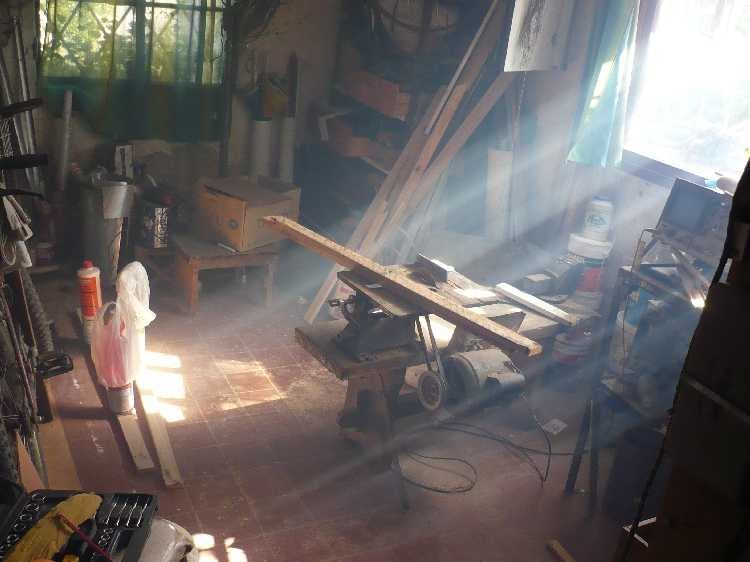

DanielPerez
Notas_extra_Radio
danielperez.webcindario.com www.qsl.net/lw1ecp
Ing. Daniel Pérez LW1ECP
fb: Daniel Ricardo Perez Alonso contacto: danyperez1{arrroba}yahoo.com.ar
Vuelco aquí una serie de artículos que no encajarían
en mi sitio dedicado a la Radio,
www.qsl.net/lw1ecp
Corresponden a temas de Electrónica en
General, Bricolaje, Reciclado, Material Didáctico, Humor.

Algunos son recientes, otros fueron exhumados de mis primeras publicaciones en
revistas en los años 80, pero que igual los incluyo por seguir vigentes... o por
nostalgia.
Vuelva cada tanto, que seguiré agregando material.
Espero que le sea útil!
Le gusta? Tiene críticas? Quiere que agregue un tema? Escríbame! danyperez1 arrroba yahoo.com.ar
NOTA: muchas reparaciones en la sección
no-electrónica se incluyeron por la sola satisfacción de demostrar que se
pudieron hacer, o por humor, aunque hubiese sido más sensato tirar la cosa y
comprar una nueva. Aunque... si la cosa remendada termina durando más que de
nueva...
Lo principal es que, aunque a Ud. jamás le toque aplicar
exactamente ninguno de los casos tratados, le despierte la conciencia de que
muchas cosas las puede salvar uno mismo.
1a subida: 26/ene/2011
<eof>